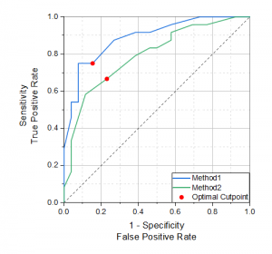

ROC-Kurve (nur Pro)
ROC-Curve
Einführung
Die ROC-Kurve (Receiver Operating Characteristic) wird verwendet, um den Ausgleich zwischen der Falsch-Negativ-Rate und der Wahr-Positiv-Rate für jede mögliche Referenzgrenze darzustellen.
Traditionsgemäß wird die Falsch-Positiv-Rate (1-Spezifität) auf der X-Achse und die Wahr-Positiv-Rate (Sensitivität) auf der Y-Achse in der Zeichnung gezeigt.
- 
Ergebnisse interpretieren
ROC-Kurven werden verwendet, um festzustellen, ob ein Diagnosetest gut oder schlecht ist.
Die ROC-Kurve kann auf Grundlage von zwei Kriterien bewertet werden.
-
Form
- Wenn die ROC-Kurve schnell nach oben links im Diagramm ansteigt, ist der Wert für falsch-positiv und falsch-negativ niedrig. Dieser Diagnosetest kann dann als gut bezeichnet werden. Bei einem schlechten Diagnosetest haben die einzigen Grenzwerte, durch die die Falsch-Positiv-Rate niedrig ist, eine hohe Falsch-Negativ-Rate und umgekehrt. Daher ist der zugehörige Diagnosetest möglicherweise nicht gut, wenn die ROC-Kurve von links unten nach oben rechts abfällt.
-
Bereich unter der Kurve
- Wenn die ROC-Kurve nach oben links ansteigt, ist der Diagnosetest umso besser, je größer die Fläche unter der Kurve ist. In der Praxis wird ein Diagnosetest einen Bereich irgendwo zwischen diesen beiden Endpunkten haben. Je näher der Bereich an 1,0 liegt, desto besser ist der Test, und je näher der Bereich an 0,5 liegt, desto schlechter ist der Test.
Umgang mit fehlenden Werten
Die fehlenden Werte in dem Datenbereich werden aus der Analyse ausgeschlossen.
Die fehlenden Werte im Gruppierungsbereich und die entsprechenden Datenwerte werden aus der Analyse ausgeschlossen.
ROC-Kurve durchführen
Um eine ROC-Kurvenanalyse durchzuführen:
- Wählen Sie Statistik: ROC Kurve. Der Dialog ROCCurve wird geöffnet.
- Legen Sie die Eingabedaten und die Optionen unter Steuerung Berechnung fest.
- Nachdem Sie auf OK geklickt haben, wird ein Analysebericht erstellt.
|
Themen, die in diesem Abschnitt behandelt werden:
|